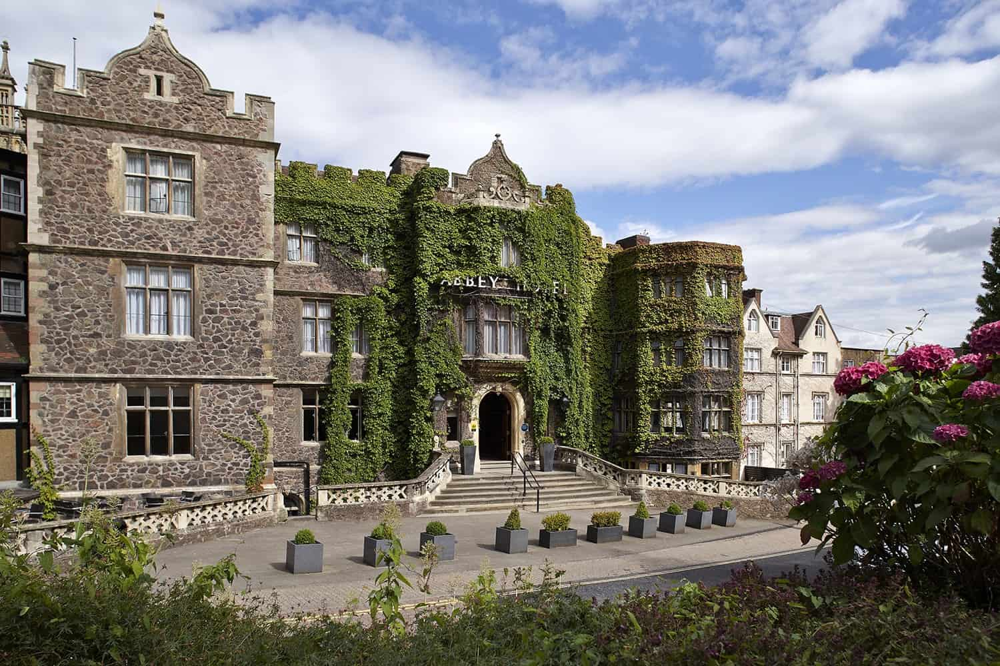

Day 2
Breakfast at Thoughtful Bakery! (no, not Thoughtworks haha!)
Your chocie of going out, or let the bunbun takeaway some buns and eat at the hotel!
Here's a back story...
Duncan, the founder, was just a web developer that had a mid-life crisis a little earlier than most. Boredom from his freelance work had him get into cooking, growing, and foraging as well as skip-scavenging for reclaim materials to build various small-scale eco-projects.
Bread baking started as just another hobby, but very quickly took over his life (and his kitchen).
The Thoughtful Bread Company very quickly established it's reputation as one of the UK's leading "artisan" bakeries. The business has evolved throughout it's existence, but has now finally settled as a small (but perfectly formed) bakery, cafe and bakery school based in the heart of Bath.

Quick change of hotel for logistic problems... it's just the hotel right across.

Lets do some touristy stuff for now...
let's take a walk and get to know Bath!
Option 1...
See Bath from another angle. Take a stroll on the Bath Skyline Walk. Just a short distance from the city centre, this six-mile route takes you through lush meadows, secluded valleys and ancient woodlands. Alongside the natural splendour, you’ll also take in some spectacular wide-angle vistas of beautiful Bath.
Option 2...
Climb Bath Abbey’s Tower. Take the Bath Abbey Tower Tour to see the different, working side of this iconic landmark. Ascend 212 steps to the top, and you will climb past the ringing chamber to the bell chamber, to have the chance to stand above the Abbey’s vaulted ceiling and sit behind the clock face. Once you reach the roof, you’ll be rewarded with breathtaking views over the city and surrounding countryside.
Hopefully the walk has made your stomach grumble.
And since I know how you absolutely love seafood, we will have brunch at the lovely Scallop Shell. Menu is available here.

Now that you are full... onto the highlight of the day... we get to make our own gin!

Starting with a large bath gin & tonic and a brief discussion on gin’s rich history, a look through the botanicals laboratory and then upstairs to the distiller's bar where the making will take place. Guests are offered a second drink from a choice of any of the bath distillery products (classic, cucumber & jasmine, rhubarb, sloe). The workshop commences with a short explanation on how to make your own gin. This entails experimenting with different flavour distillates that have been produced by our distillery, in order to create a bespoke gin to cater to an individual’s palate. This is all done under the supervision of a member of the bath distillery team giving explanation into flavour profiles, pairings and helping in the creation of some truly individual gins.
Each visitor will then have the opportunity to experiment with the flavour distillates on a small scale to establish their personal tastes. Once everyone is happy with the flavours they have combined, they blend them into their very own bottle of gin that is sealed on site and taken away as a souvenir. Additionally, the gin making experience also includes a 200ml hip flask of bath gin and a £10 voucher to be used in the gift shop or behind the bar for a chance to sample any of the 230 gins the bar offers.
So let's head over to The Bath Gin Compnay at 1pm.
Dinner at Sotto Sotto for one of the best pasta places. Check out the menu
here.
Sotto Sotto has been awarded Best Italian Restaurant in Bath at the Bath Good Food Awards.

Now time to bust out our redbulls, we are going clubbing at Ponana.
here.
Propaganda is the UK’s biggest club night with over 20 weekly club nights across the UK, Australia and Brazil. Over 25,000 people attend the club night around the world each week. You can expect an unrivalled audio-visual mix with our resident DJs playing everything from Arctic Monkeys to The 1975, Paramore to Ed Sheeran, The Killers to Pale Waves and much more. Imagine festival vibes without the mud!
Let's be young again!!!